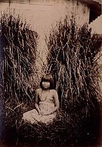

Indígenas
São designados como povos aborígenes, autóctones, nativos, ou indígenas aqueles que viviam numa área geográfica antes da sua colonização por outro povo ou que, após a colonização, não se identificam com o povo que os coloniza. A expressão povo indígena, literalmente "originário de determinado país, região ou localidade; nativo", é muito ampla, abrange povos muito diferentes espalhados por todo o mundo. Em comum, têm o fato de que cada um se identifica com uma comunidade própria, diferente acima de tudo da cultura do colonizador.
Os povos são geralmente descritos como indígenas quando mantêm tradições ou outros aspectos de uma cultura primitiva associada a uma determinada região. Nem todos os povos indígenas compartilham essa característica, pois muitos adotaram elementos substanciais de uma cultura colonizadora, como roupas, religião ou idioma. Os povos indígenas podem ser assentados em uma determinada região (sedentários) ou exibir um estilo de vida nômade em um grande território, mas geralmente estão historicamente associados a um território específico do qual dependem. As sociedades indígenas são encontradas em todas as zonas climáticas habitadas e continentes do mundo, exceto na Antártica.
Como os povos indígenas continuam a enfrentar ameaças à sua soberania, bem-estar econômico, línguas, formas de conhecimento e acesso aos recursos dos quais dependem suas culturas, direitos políticos foram estabelecidos no direito internacional pelas Nações Unidas, a Organização Internacional do Trabalho e o Banco Mundial. Em 2007, as Nações Unidas emitiram uma Declaração sobre os Direitos dos Povos Indígenas (UNDRIP) para orientar as políticas nacionais dos Estados membros em relação aos direitos coletivos dos povos indígenas, incluindo cultura, identidade, idioma e acesso a emprego, saúde e qualidade. educação e recursos naturais. O Dia Internacional dos Povos Indígenas do Mundo é comemorado em 9 de agosto de cada ano.
Povos indígenas
Oceânia
Na maior parte da Oceania, os povos indígenas superam os descendentes de colonos. As exceções incluem Austrália, Nova Zelândia e Havaí. De acordo com o censo de 2013, os Maoris da Nova Zelândia representam 14,9% da população da Nova Zelândia, e menos da metade (46,5%) de todos os residentes Maoris se identificam apenas como Maoris.Os Maori são indígenas da Polinésia e se estabeleceram na Nova Zelândia há relativamente pouco tempo, com migrações que se acredita ter ocorrido no século XIII. Na Nova Zelândia, os grupos Maori pré-contato não se viam necessariamente como um só povo, portanto, agrupar-se em arranjos tribais (iwi) tornou-se um arranjo mais formal em tempos mais recentes. Muitos líderes nacionais Maori assinaram um tratado com os britânicos, o Tratado de Waitangi (1840), visto em alguns círculos como formando a moderna entidade geopolítica que é a Nova Zelândia.
A maioria da população de Papua Nova Guiné (PNG) é indígena, com mais de 700 nacionalidades diferentes reconhecidas em uma população total de 8 milhões. A constituição e os principais estatutos do país identificam as práticas tradicionais ou costumeiras e a posse da terra, e são explicitamente estabelecidos para promover a viabilidade dessas sociedades tradicionais no estado moderno. No entanto, conflitos e disputas sobre o uso da terra e os direitos aos recursos continuam entre os grupos indígenas, o governo e entidades corporativas.
Austrália
Na Austrália, as populações indígenas são os povos aborígenes australianos (compreendendo muitas nações e tribos diferentes) e os povos das ilhas do Estreito de Torres (também com subgrupos). Esses grupos costumam ser chamados de australianos indígenas.
Os aborígenes australianos formam uma população, assim como os grupos indígenas, que foi vítima de massacres pelos colonizadores e discriminados por parte da população dita civilizada. Os colonizadores ingleses foram os principais responsáveis pelos massacres das comunidades indígenas australianas. Soldados ingleses aproximavam-se das aldeias e ofereciam agrados para a população local. Entretanto, outros soldados envenenavam com arsênio a água e os alimentos dessa população. Vários aborígenes morreram em consequência do envenenamento causado por esse elemento químico. Atualmente os aborígenes correspondem a 1% da população australiana.
América
Os povos indígenas do continente americano são amplamente reconhecidos como aqueles grupos e seus descendentes que habitavam a região antes da chegada dos colonizadores europeus (ou seja, pré-colombianos). Os povos indígenas que mantêm ou procuram manter modos de vida tradicionais são encontrados desde o alto Ártico ao norte até os extremos meridionais da Terra do Fogo.
Quando os europeus chegaram ao continente americano no século XV o continente era habitado por centenas de etnias nativas. Durante o processo de colonização, as populações nativas foram escravizadas embora o impacto das doenças tenha implicado na diminuição significativa da população indígena. Os impactos da colonização europeia histórica e contínua das Américas sobre as comunidades indígenas geralmente foram bastante severos, com muitas autoridades estimando faixas de declínio populacional significativo principalmente devido a doenças, roubo de terras e violência. Vários povos foram extintos ou quase extintos. Mas existem e existem muitas nações e comunidades indígenas prósperas e resilientes.
Brasil
A presença dos índios no território brasileiro é de cerca de 12 000 anos anterior ao processo de ocupação estabelecido pelos colonizadores que chegaram no território onde é o atual Brasil. Segundo estimativas de alguns documentos feitos na atualidade, a população indígena brasileira variava entre três e cinco milhões de habitantes indígenas. Nessa vasta população, havia a presença de etnias de diferentes filiações linguísticas, entre as quais podem-se citar os panos, caribes, tupi-guaranis, jês e outros.
Aponta-se para uma tendência do índio passar a viver em cidades para poder estudar e ter acesso a outros recursos. Com isso há o risco de favelização diante das dificuldades para se manter no meio urbano
Europa
Na Europa, a maioria dos grupos étnicos são nativos da região no sentido de tê-la ocupado por muitos séculos ou milênios. No entanto, as populações indígenas atuais, conforme reconhecido pela definição da ONU, são relativamente poucas e estão confinadas principalmente ao Norte e Extremo Oriente.
Populações de minorias indígenas notáveis na Europa que são reconhecidas pela ONU incluem os povos fino-úgricas nenets, samoiedos e Komi do norte da Rússia; Circassianos do sul da Rússia e do norte do Cáucaso; Tártaros da Crimeia na Ucrânia; e os povos Sámi do norte da Noruega, Suécia e Finlândia e noroeste da Rússia (em uma área também conhecida como Sápmi).
O impacto da conquista russa da Sibéria foi significativo. A conquista russa da Sibéria foi acompanhada de massacres devido à resistência indígena à colonização pelos cossacos russos. Nas mãos de figuras como Vasilii Poyarkov em 1645 e Yerofei Khabarov em 1650, alguns povos como os Daur foram massacrados pelos russos. 8.000 dos 20.000 habitantes de Kamchatka permaneceram após meio século de massacre pelos cossacos.
Em 1864, o evento conhecido como Genocídio Circassiano ocorreu onde de 1 milhão a 1,5 milhão de circassianos foram mortos e outro milhão foi deportado.
Durante o século XX, haveria vários episódios de genocídio contra as minorias indígenas como parte das políticas de limpeza étnica. O Império Otomano cometeria genocídios contra as minorias armênias, assírias e gregas em seu território. Na Alemanha nazista, programas de extermínio seriam realizados contra judeus (Holocausto) e ciganos (Porajmos), os poloneses eram considerados racialmente inferiores, então uma campanha de destruição da identidade cultural polonesa foi iniciada, além de substituir a população indígena polonesa por colonizadores alemães. Na União Soviética, foi feita uma tentativa de destruir a população indígena ucraniana por meio do holodomor, termo polêmico até hoje, e foram estabelecidos programas de transferência populacional que afetaram as populações Vainakh (Operação Lentil, durante o qual nomes locais na Chechênia e na Ingushetia foram substituídos por outros russos; mesquitas e cemitérios foram destruídos, e uma campanha massiva queimou incontáveis manuscritos, livros e patrimônio inestimável no estilo histórico de Nakh) e os povos bálticos (Operação Priboi)
África
No período pós-colonial, o conceito de povos indígenas específicos dentro do continente africano ganhou maior aceitação, embora não sem controvérsia. Os diversos e numerosos grupos étnicos que constituem a maioria dos Estados africanos independentes modernos contêm em si vários povos cujo status, culturas e estilos de vida de pastoreio ou caçador-coletor são geralmente marginalizados e isolados das estruturas políticas e econômicas. dominante da nação. Desde o final do século XX, esses povos têm buscado cada vez mais o reconhecimento de seus direitos como povos indígenas distintos, tanto em contextos nacionais como internacionais.
Ásia
O povo Nivkh é um grupo étnico indígena Sakhalin, que tem alguns falantes da língua Nivkh, mas sua cultura pesqueira está em perigo devido ao desenvolvimento do campo de petróleo Sakhalin a partir dos anos 1990.
Na Indonésia, existem entre 50 e 70 milhões de pessoas que são classificadas como povos indígenas. No entanto, o governo indonésio não reconhece a existência de povos indígenas, classificando todos os grupos étnicos indonésios nativos como "indígenas", apesar das claras distinções culturais de certos grupos.
Nas Filipinas, existem 135 grupos etnolingüísticos, a maioria dos quais são considerados povos indígenas pelos principais grupos étnicos indígenas do país. Os povos indígenas da região administrativa da Cordilheira e do Vale Cagayan nas Filipinas são os Igorot. Os povos indígenas de Mindanau são os povos Lumad e Moro (Tausug, Maguindanao Maranao e outros) que também vivem no Arquipélago de Sulu. Existem também outros grupos de povos indígenas em Palawan, Mindoro, Visayas e no resto do centro e sul de Luzon. O país possui uma das maiores populações indígenas do mundo.
Em Mianmar, os povos indígenas incluem Shan, Karen, Rakhine, Karenni, Chin, Kachin e Mon. Porém, há mais etnias consideradas indígenas, por exemplo, os Akha, Lisu, Lahu ou Mru, entre outros.
Ocupação do Brasil
A forma de ocupação do atual território brasileiro, como se pode deduzir, é igualmente incerta. No sítio da Lapa Vermelha, na região arqueológica de Lagoa Santa, em Minas Gerais, foi encontrado um cemitério datado em pouco mais de 10 mil anos, estudado primeiramente por Peter Lund no século XIX. Muitas outras pesquisas se sucederam. Annette Laming-Emperaire, na década de 1970, encontrou ali o fóssil batizado de Luzia. Parte de uma população conhecida como povo de Lagoa Santa, Luzia foi tida como a mais antiga brasileira já encontrada, com idade estimada por Feathers et alii, a partir de evidências indiretas, em até 16,4 mil anos, mas há dúvidas sobre essa antiguidade, aceitando-se em geral c. 11,5 mil anos. Pensava-se que Luzia, bem como outros esqueletos ali encontrados, possuísse traços negroides típicos de povos da Austrália e Melanésia, contrastando com o fenótipo mongoloide que define os ameríndios em geral, e apontando para linhagens genéticas alternativas. Achados em vários outros locais de todo o continente, embora não tão antigos, confirmam uma presença precoce do tipo negroide na América, bem antes da chegada dos primeiros africanos no século XVI, através da escravidão imposta pela colonização portuguesa. Contudo, a análise do DNA realizada por pesquisadores da Universidade de São Paulo, da Universidade Harvard e do Instituto Max Planck mostrou que o código genético do povo de Lagoa Santa é semelhante ao de todos os povos indígenas da América e, neste caso, as feições seriam mongoloides.
Na Pedra Furada, como foi dito, as datações podem chegar a 50 mil anos AP, e quatro outros sítios na área foram datados com 18 a 14 mil anos AP. Achados em São Raimundo Nonato, no Piauí, dão cronologias que se estendem a até 48 mil anos antes do presente, e especula-se que camadas inferiores já identificadas mas ainda não exploradas poderiam revelar fósseis de até 60 mil anos. O extremo sul do Brasil parece ter sido atingido primeiro pelos povos umbu, que deixaram registros datados com 12,7 mil anos de idade. Mas essas datações também têm sido questionadas.
O Brasil, ao ser formado pela migração de ameríndios, africanos e europeus (a partir do século XVI) e asiáticos (a partir do século XX) tornou-se um ponto de "reencontro" dessas pessoas que, apesar de terem a mesma origem ancestral, ficaram separadas durante milênios devido às migrações para diferentes partes do mundo. Esses milênios de separação criaram diferenças culturais, linguísticas e fenotípicas, em decorrência da adaptação de cada grupo a meios ambientais completamente diferentes. Apesar dessas diferenças serem muitas vezes interpretadas como formadoras de "raças" humanas diferentes, do ponto de vista genético o conceito de raça é infundado.
Cultura indígena brasileira
Originalmente a educação nas comunidades era dada de maneira coletiva e tradicional, em grande parte baseada na oralidade, já que nenhuma das sociedades indígenas brasileiras possuiu sistemas de escrita conhecidos. Calcula-se que antes de Cabral eram faladas cerca de 1.300 línguas nativas. Hoje seu número é muito menor. Não se sabe exatamente qual seja, devido à variação nos critérios utilizados, mas pode ainda haver cerca de 270 línguas vivas. O número oficial do IBGE é de 274. Muitas, porém, estão em rápido declínio, com apenas poucos falantes. Poucas foram estudadas em profundidade, apenas 9% delas tem descrição completa, com gramática, coletânea de textos e dicionário. Elas se dividem em dois grandes troncos linguísticos, o tupi e o macro-jê. No primeiro se incluem, por exemplo, as línguas tupi-guarani, monde, tupari, juruna e mundurucu, e no segundo, jê, bororo e botocudo. Também existem diversos grupos falantes de línguas isoladas, sem afinidades próximas com quaisquer outras línguas, como o ticuna, trumai e jabuti. Além disso, há uma infinidade de dialetos e variações das línguas principais. O ticuna, o guarani-caiouás e o Caingangue são as que têm maior número de falantes.
Apesar da ausência de sistemas de escrita, muitos grupos desenvolveram uma rica diversidade de sinais e outras formas gráficas, de variado grau de complexidade, repetidas através de gerações e que, sabe-se, eram portadoras de significados específicos, uma forma de comunicação diferente dos sistemas de escrita formais do ocidente, embora seja comparável à sua arte. Ainda que seu significado exato permaneça com frequência mal compreendido, especialmente nos documentos arqueológicos, esses sinais e formas visuais, às vezes arranjados em cenas narrativas ao lado de figuras de seres vivos, são documentos históricos importantes para a reconstituição de suas vidas. Pictogramas e gravuras rupestres que sobrevivem em sítios arqueológicos em todo o Brasil dão amplo testemunho de mentes capazes de criar mensagens complexas, em que se mesclam plasticidade e significados. Na descrição de Irene Machado, pesquisadora do CNPq, "as inscrições rupestres.... constituem um legado capaz de desfazer equívocos e desvendar redes de possibilidades. Porque constroem sistemas de escrita por meio de signos notacionais, estão muito mais próximas da criação científica e artística do que da mera comunicação instrumental". Grande parte deste acervo arqueológico já desapareceu ou está ameaçado pelo avanço da civilização, pelo desconhecimento do seu valor e pelo vandalismo premeditado.
Mesmo que muito já tenha sido perdido, a cultura material e imaterial dos povos indígenas brasileiros que sobrevive até o presente é riquíssima em conjunto, embora possa variar muito entre os casos individuais. Algumas culturas se caracterizam pela grande fartura de apetrechos e objetos decorados, organizam ritos suntuosos, apreciam generosa pintura corporal; outras são mais adeptas da simplicidade visual, mas podem desenvolver por exemplo grandes habilidades musicais, ter substantiva tradição oral e falar linguagens sutis e sofisticadas. Entre as especialidades que cultivaram se destacam a música, a dança, a cerâmica, a tecelagem, a cestaria, a pintura corporal e a arte plumária. Essa produção tinha papel central na vida das tribos, sendo o veículo de ideias, conceitos religiosos e símbolos coletivos, além de servir como expressão de beleza e habilidade. De fato, os melhores criadores eram prestigiados.
Mas não havia a figura do "artista"; todos eram hábeis em várias formas de arte. Para os índios uma dedicação especializada e exclusiva, típica da sociedade ocidental, era sintoma de um desequilíbrio espiritual ou uma obsessão, pois as atividades vitais deviam ser distribuídas equilibradamente e a produção de objetos simbólicos, que compunham grande parte de sua cultura material, estava sob a influência de poderes espirituais, e devia ser restrita a ocasiões ritualizadas. O próprio processamento das matérias-primas usadas para a confecção dos artefatos era carregado de ritualidade e sujeito a leis precisas, que variavam entre cada tribo. Para os palicures, por exemplo, as penas vermelhas das araras são assentos de espíritos protetores, por isso usadas em adornos corpóreos, objetos e espaços a fim de afugentar influências malignas. Entre os uaianas, a tintura do arumã é a matéria-prima mais carregada de simbolismo, já que a constituição da planta é comparada à dos seres humanos. O grande cocar caiapó chamado krokrok ti simboliza a própria aldeia. No centro vão penas azuis que representam a praça, o local masculino e público por excelência, em torno são enfileiradas penas vermelhas, simbolizando o mundo feminino e doméstico. Penugens brancas de acabamento representam a floresta. Muitos povos e clãs desenvolveram uma série de padrões geométricos, transmitidos tradicionalmente em cestaria, cerâmica, pintura corporal e tecelagem, que se tornaram marca registrada de cada grupo, possuindo também significados e preservando conhecimentos matemáticos.
A música tinha grande destaque entre as artes, sua origem era tida como divina, sendo recebida através de sonhos. Para eles o som tinha poderes mágicos, estando na base da estruturação do cosmos e sendo poderoso instrumento de intervenção deliberada no mundo físico, como por exemplo produzindo curas. Praticamente não se produzia música que não tivesse alguma associação com o sagrado, estando presente em toda parte, especialmente nos grandes festejos, quando era praticada coletivamente. As cantorias e declamações rituais, que recontavam histórias da tradição, descreviam sonhos proféticos, invocavam espíritos e produziam curas e visões, "cumprem também um papel fisiológico na própria constituição dos estados psíquicos, atualizando a experiência dos eventos míticos", como descreveu a antropóloga Deise Montardo. A música também incluía canções de amor e saudade, podendo ser impregnadas de intenso lirismo poético. José Miguel Wisnik analisou esta importância dizendo que "cantar em conjunto, afinar as vozes, significa entrar em acordo profundo e não visível sobre a intimidade da matéria", produzindo uma identificação e afirmação comunitária contra o mar de sons do mundo manifesto.
Por esses poucos exemplos se percebe a forte importância da arte em suas culturas. Contudo, é preciso advertir que eles não tinham um conceito de "arte" como o ocidental, considerando-a uma atividade autônoma; suas atividades criativas eram integradas às funções cotidianas e sua "arte" era em essência utilitária, em grande medida se confundindo com o artesanato folclórico pelas suas características tradicionalistas, passadas de geração em geração. Esta distinção, que já foi muito usada para desqualificá-la, se tornou, porém, ultrapassada, em vista do amplo reconhecimento atual da cultura material e imaterial dos índios como arte efetivamente pelos próprios ocidentais, com riqueza de funções e significados, qualidade estética e níveis de complexidade equiparáveis aos da tradição do ocidente, e muitos museus em todo o mundo possuem preciosas coleções de artefatos dos índios brasileiros.